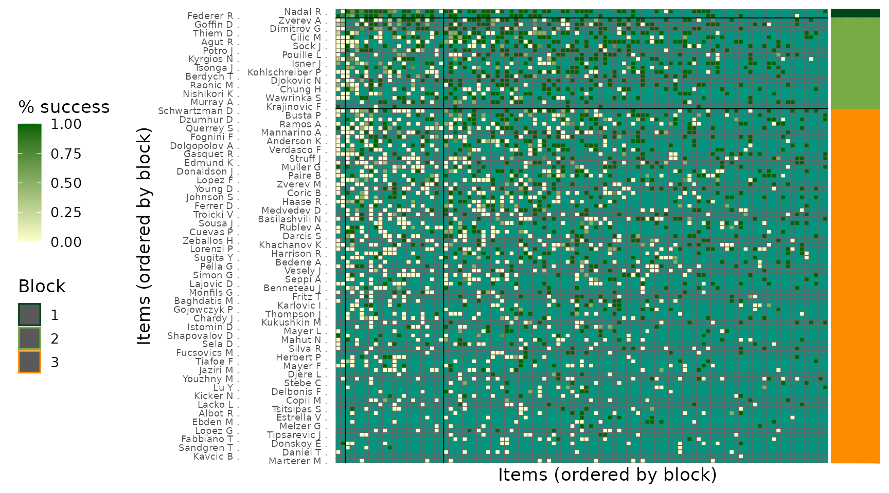

Getting started with BTSBM: the R package for the BT-SBM paper
Lapo Santi
2025-10-28
Source:vignettes/getting-started.Rmd
getting-started.RmdOverview
This vignette shows a minimal workflow with the BTSBM
functions. We use as illustrative dataset the 2017 Men’s ATP season for
convenience.
Set up the data
#choosing the 2017 season
w_ij = ATP_2000_2022$`2017`$Y_ij
#quick look at the matrix
head(w_ij[1:3,1:3])#> Rafael_Nadal Roger_Federer Grigor_Dimitrov
#> Rafael_Nadal 0 0 3
#> Roger_Federer 4 0 1
#> Grigor_Dimitrov 0 0 0Each entry (w_{ij}) counts how many matches player
(i) won against (j) in the chosen season. The
matrix is directed (wins aren’t symmetric), and the diagonal is zero by
design. In practice, sparse rows/columns correspond to players with few
matches.
Prior elicitation
# Gamma hyper.
a_strength = 2 # robust choiceChoosing a prior on (\(K\)). The number of clusters is unknown. on (K) to let the data negotiate between parsimony (few blocks) and expressiveness (many blocks). This also curbs the classic tendency of mixture-like models to over-split when data are noisy.
#Gnedin model chosen (Other possible choices "DM", "PY", "DP")
prior = 'GN'
gamma_GN = 0.8
n = nrow(w_ij)
#check E[K | gamma, n]
round(gnedin_K_mean(n,gamma_GN))#> [1] 2
#check Var[K | gamma, n]
gnedin_K_var(n,gamma_GN)#> [1] 45.95132Run the MCMC
We now draw samples from the joint posterior distribution using a collapsed Gibbs sampler. In this simplified demonstration the chain length is intentionally short; in empirical applications, longer runs or parallel chains are recommended.
set.seed(123)
T_iter = 10000 #for real use set it to 30,000
T_burn = 2000
out <- BTSBM::gibbs_bt_sbm(
w_ij = w_ij,
a = a_strength,
prior = prior, # "DP", "PY", "DM", or "GN"
gamma_GN = gamma_GN,
T_iter = T_iter,
T_burn = T_burn,
verbose = T
)#> iter 1000 occupied = 4
#> iter 2000 occupied = 7
#> iter 3000 occupied = 7
#> iter 4000 occupied = 5
#> iter 5000 occupied = 4
#> iter 6000 occupied = 5
#> iter 7000 occupied = 4
#> iter 8000 occupied = 7
#> iter 9000 occupied = 7
#> iter 10000 occupied = 3Relabel and summarize
The posterior distribution of latent block-assignments is invariant under permutations of cluster labels. Consequently, averaging or summarizing raw samples is meaningless without post-processing. Relabeling methods align label permutations across iterations, enabling consistent summaries of cluster-specific parameters.
library(dplyr)
library(ggplot2)
library(kableExtra)
post <- BTSBM::relabel_by_lambda(out$x_samples, out$lambda_samples)
# Pretty table of the K posterior distribution
pretty_table_K_distribution(post)| 3 | 4 | 5 | 6 | 7 |
|---|---|---|---|---|
| 0.152 | 0.302 | 0.25 | 0.164 | 0.076 |
Obtain point estimates
Partition estimates such as the Binder or Minimum Variation of Information (MinVI) losses are the state-of-the-art point estimate methods for partition samples. Binder’s loss tends to favor slightly finer partitions, while MinVI is more conservative. Comparing these estimates provides insight into the stability of the inferred grouping structure.
x_binder <- post$partition_binder #partition with Binder loss
table(x_binder) #Block sizes#> x_binder
#> 1 2 3 4 5 6 7 8 9 10 11
#> 2 1 16 5 1 1 1 1 3 1 73
x_minVI <- post$minVI_partition #partition with MIN-VI loss
table(x_minVI) #Block sizes#> x_minVI
#> 1 2 3
#> 2 21 82Plot reordered adjacency matrix
The reordered adjacency matrix reveals the empirical interaction pattern between inferred blocks. Dark-green colour in the right off-diagonal region correspond to high winning proportions, while uniform colours along the main diagonal indicate balanced competitiveness within clusters. This visualization serves as a qualitative validation of the inferred block structure.
plot_block_adjacency(fit = post,
w_ij = w_ij)
Plot assignment uncertainty
Posterior probabilities of assignment \(p(x_i = k | W)\) quantify the uncertainty of player-to-block allocations. High uncertainty for certain individuals typically signals boundary cases or transitional players whose performance profile lies between different clusters.
plot_assignment_probabilities(fit = post, w_ij = w_ij)
Plot lambda uncertainty
Posterior uncertainty in \(\lambda_{x_i}\), the strength of player i. Since all players assigned to the same block share the same \(\lambda\), the uncertainty here is driven by the assignment uncertainty. Reporting credible intervals gives a precise idea of the relative strength differences between clusters, and between players as well.
plot_lambda_uncertainty(fit = post, w_ij = w_ij, clean_fun = clean_players_names)